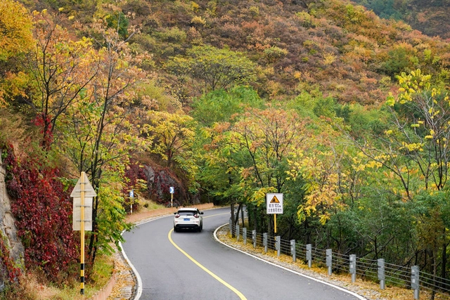
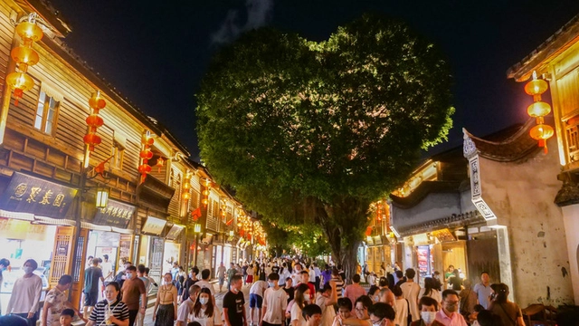

经文化和旅游部数据中心测算，2022年国庆节假期7天，全国国内旅游出游4.22亿人次，同比减少18.2%，按可比口径恢复至2019年同期的60.7%。实现国内旅游收入2872.1亿元，同比减少26.2%，恢复至2019年同期的44.2%。全国文化和旅游假日市场总体安全平稳有序，呈现以下特点：
在落实好疫情防控要求前提下，国庆节假期，全国各级文化馆组织活动13940场，参与人次5927.48万，共有10801家A级旅游景区正常开放，占A级景区总数的75%。文化和旅游部联合有关部门发布国庆假期12条体育旅游精品线路，推出“稻花香里说丰年”全国乡村旅游精品线路128条。5个国家文化和旅游消费示范城市及试点城市举办约9100场文化和旅游消费促进活动，发放2.83亿元文化和旅游消费惠民补贴，参与人数超1.4亿人次，直接带动文化和旅游消费154.1亿元。福建发放3000余万元消费券，吸引更多市民游客感受“清新福建”“福文化”魅力。安徽黄山通过科技赋能，在全国率先实施“先游后付”，面向“大黄山”区域开启信用旅游新模式。山西临汾洪洞大槐树景区寻根祭祖园围绕“大美中国 魅力古槐”主题，推出多种优惠福利“与国同庆”。海南海口面向参与抗疫付出和作出贡献的基层工作者推出性价比高、价格优惠的“乐享国庆·欢游海口”套餐。广东省立中山图书馆举办“我的母亲叫中国”展览、“百名摄影师聚焦新时代”图片展等主题展览活动。湖北以“凤鸣楚天·喜庆丰收”为主题发放酒店住宿券、景区券、旅行社线路产品券、旅游惠民卡券等“惠游湖北”消费券。

各地围绕“喜迎二十大”主题纷纷推出系列活动，打卡红色地标、探访红色旧址、缅怀革命先烈等红色旅游主题活动备受欢迎。在北京展览馆举办的“奋进新时代”主题成就展有序接待各界观众。上海市历史博物馆举办《光明摇篮精神之源——迎“二十大”上海红色文物史料展》。湖北红安县各红色旅游景区内红旗飘飘，鄂豫皖苏区纪念园等红色景区游客接待量攀升。福建举办“喜迎二十大”主题性文艺演出超百场。江西举办“江山壮丽 大美赣鄱”喜迎党的二十大胜利召开大型主题美术书法摄影创作展和“喜迎二十大 红色地标我打卡”主题实践活动。四川开展“喜迎二十大·奋进新征程”等线下主题活动。重庆举办“喜迎二十大 争做好少年”绘画比赛暨书香进校园活动等重大群众文化活动。广西桂林开展红军古道“我向祖国表白”有奖活动、“喜迎二十大·童心永向党”主题花灯展活动。河北衡水推出“喜迎二十大·情满金秋线上公益演出季”，涵盖戏曲、舞蹈、民族乐器、打击乐器、儿童剧、武术等多种艺术形式。国庆假期，年轻人参与红色旅游的主动性和积极性提高，看革命动漫、读革命书籍、逛革命景点、红色演艺、买红色文创产品受到追捧。
受疫情影响，本地游、周边游仍是广大居民出行首选，国庆假日期间选择跨省游和省内跨市游的游客比例分别下降了14.4和9.5个百分点。前往城郊公园、城市周边乡村、城市公园的游客占比居于前三位，分别达23.8%、22.6%和16.8%。北京、山东、沈阳等家门口城市公园，浙江黄贤森林公园、海南文昌椰林、福建源和1916创意产业园等举办的后备箱集市，为游客带来颇具烟火气的本地休闲和近程旅游体验。夜间文化活动和旅游消费明显活跃，第一批120家国家级夜间文化和旅游消费集聚区，累计夜间客流量3995.6万人次，平均每个集聚区每夜客流量4.76万人次。山东围绕“夜宿”“夜游”“夜集”推出“秉烛游山东”线上文旅活动。广西北海银滩潮雕灯光秀、海丝首港海上烟花秀等“夜秀”项目成为市民游客纷纷打卡的网红项目。

文化和旅游部政务新媒体“文旅之声”推出第二届全国旅游公益广告优秀作品展播，“文艺中国”播出《文华撷英——第十七届文华大奖获奖剧目集萃》。天津各大文博场馆、文艺院团在线上推出“锦绣中华”民族交响音乐会、《“喜迎二十大 科学传精神”科学家线上展览》等主题展览和演出。山东济宁通过文化云等载体开展了济宁市新时代文明实践文旅惠民服务“云展演”活动。黑龙江鹤岗市在线上展播大型歌舞史诗《党的光辉照我心》《兴山记忆》活动。河南焦作云台山景区推出抖音短视频创作大赛、“竹林七贤”国风特色演艺等多彩文旅活动，让游客体验丰富多彩的云台山金秋之旅。山西、广西、甘肃等地充分发挥线上线下融合优势，整合各类线上平台优势资源，积极开展优秀舞台艺术作品展演展示活动。这些线上活动，有效降低了人群聚集，在极大丰富群众生活的同时，也极大提高了文旅惠民的覆盖面。